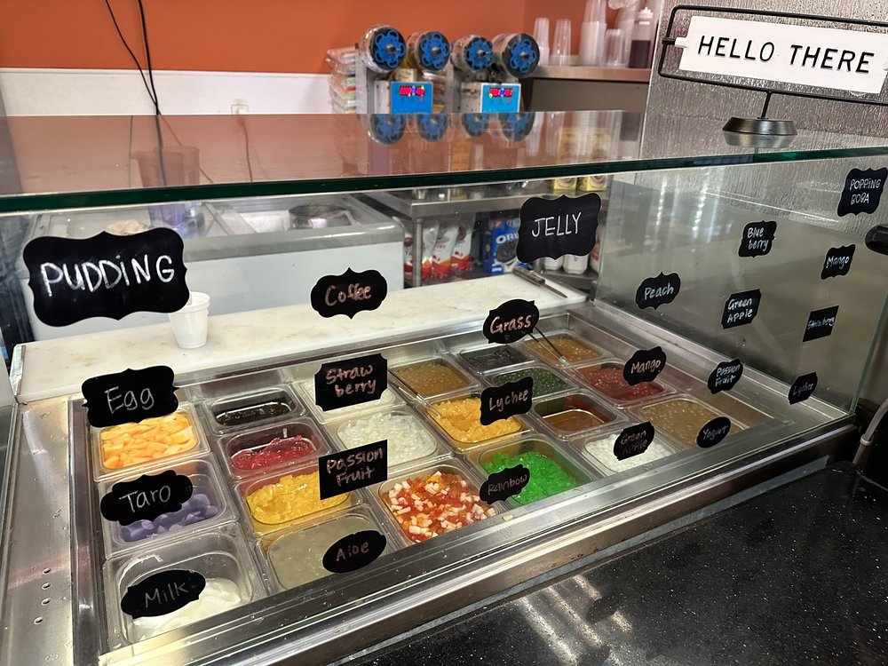
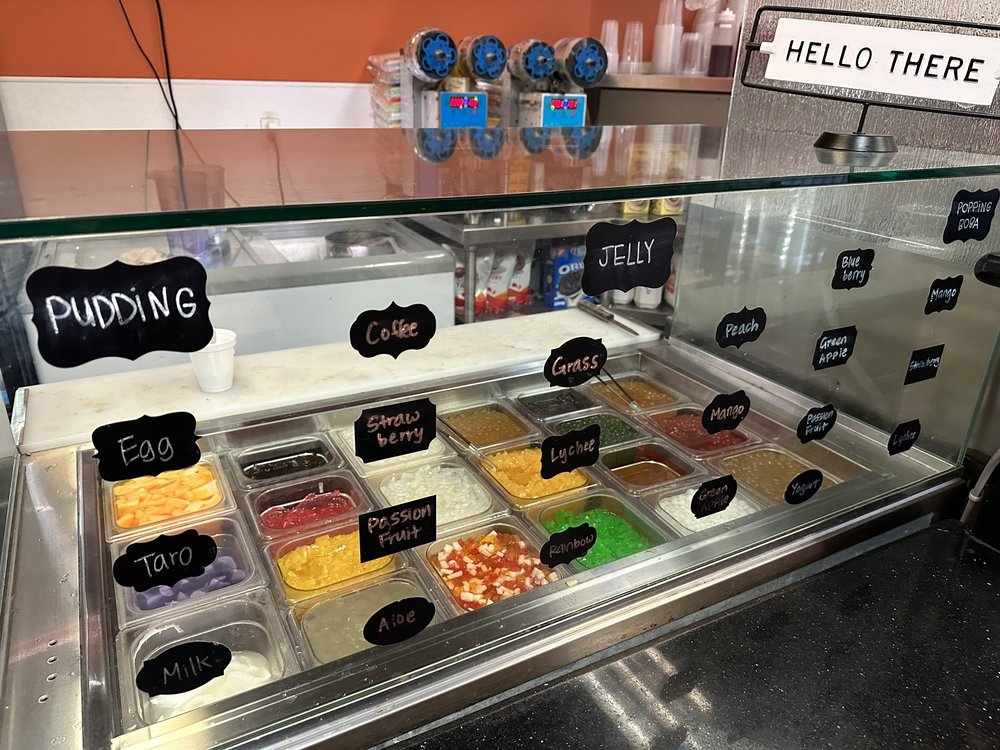
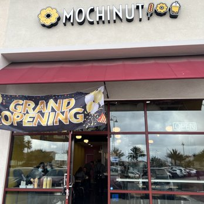
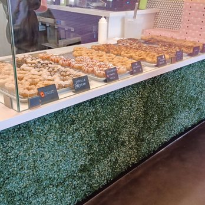
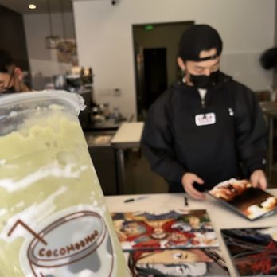
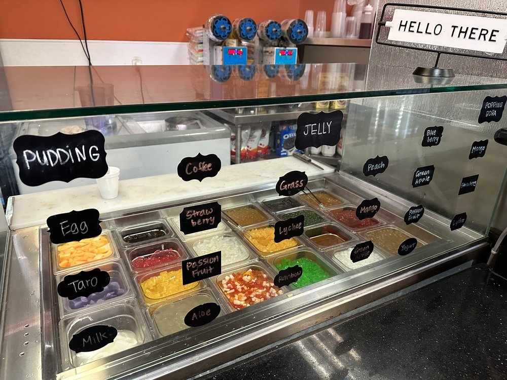
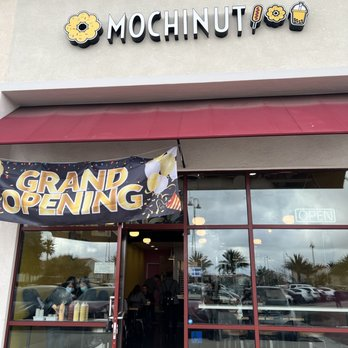
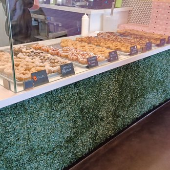
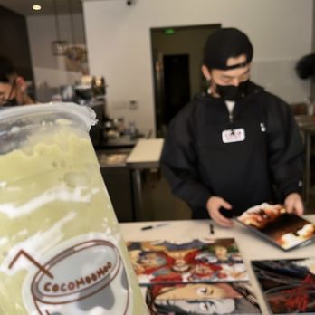

Marcus Lieu
Dedicated, team-oriented, and charismatic student with over 2 years of customer service experience.
I am
a second-year college student seeking a part time position. I possess extensive knowledge on creating a comfortable
and inviting setting for customers of all ages, coupled with a proficient work ethic and a strong passion for
continuous learning.
I bring to the table excellent communication skills and sound judgment.
Experience
Cashier
• Operated the advance Clover Cashier System to enhance transaction efficiency and customer service.
• Provided swift and effective service while consistently cultivating a friendly and welcoming environment.
• Crafted made-to-order boba beverages, showcasing precision and attention to detail in delivering high-quality
products to customers.
Cashier
• Proficiently operated the POS system, demonstrating a high level of trust as the sole cashier during my shifts.
• Maintained a pristine front end of the store through thorough cleaning and organizational efforts, contributing to
an inviting atmosphere.
• Conducted accurate cash handling by diligently counting and recording cash in the register.
• Delivered superior customer service by serving drinks and donuts with a friendly and approachable demeanor.
Cashier and Barista
• Entrusted with the responsibility of independently managing entire shifts, demonstrating reliability and
competence.
• Initiated daily operations by single handedly opening up the store, preparing team and crafting boba beverages,
showcasing self-sufficiency and proactive initiative.
• Operated the Clover Cashier System and maintained essential machinery, ensuring smooth and efficient business
operations.
• Delivered prompt and efficient service while consistently fostering a friendly and welcoming environment for
customers.
Education
University of California Riverside
Portfolio
 




 
